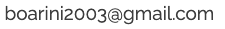
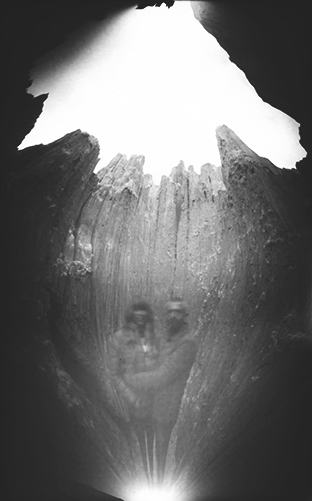

I'm Jonathan Boarini and I live in Nevada with my wife and two sons. I chair the Media Technologies Department at the College of Southern Nevada teach Graphic Communications. Photography has provided me with a rewarding passion to document my life, express myself and admire the vastness and beauty of the West, which inspires and moves me to this day.
If you enjoyed this guide and found it useful, please let me know. You can message me at 
Share your work with me and connect on Instagram
